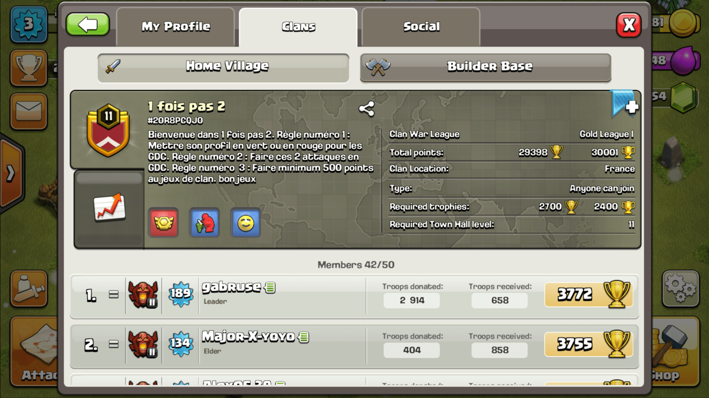
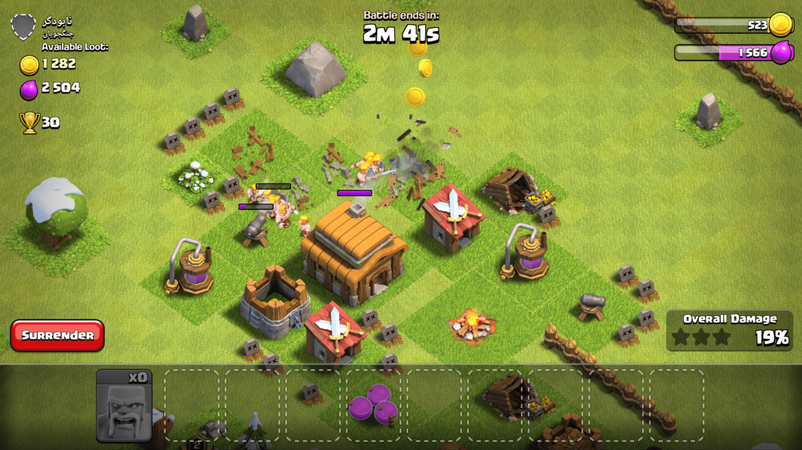
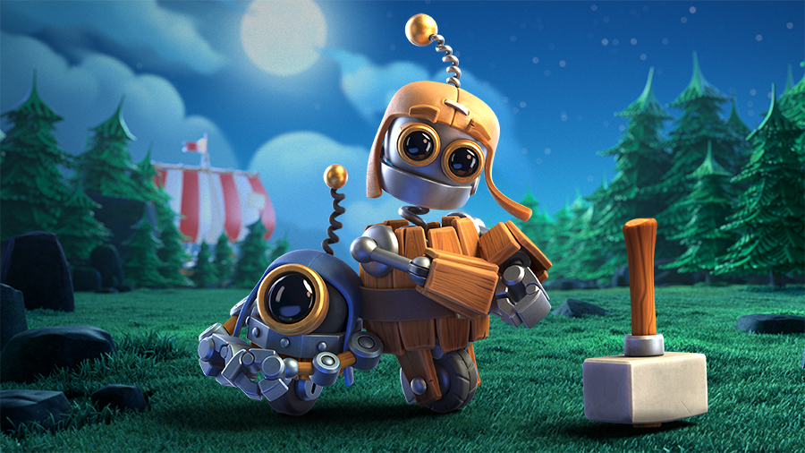
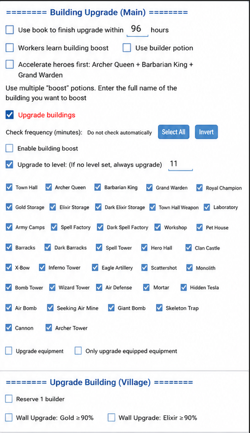

01✦
Smart farming
Run custom armies, search for suitable bases and execute repeatable attacks to keep resources flowing.

Automate Clash of Clans farming and progress for your Home Village and Builder Base—all from one powerful assistant.
Aiwan takes care of repetitive village tasks so your builders, armies and resources keep working toward your goals.
From the first raid of the day to the final upgrade queue, Aiwan keeps your progression system moving.
Run custom armies, search for suitable bases and execute repeatable attacks to keep resources flowing.
Queue buildings, heroes, equipment and laboratory progress with precise upgrade priorities.
Spend surplus Gold or Elixir on walls while respecting builder and resource thresholds.
Automate Builder Base attacks, resource farming and upgrades alongside your Home Village.
Request and donate troops, contribute Capital Gold and take part in Raid Weekends.
Work through Clan Games and recurring objectives with less repetitive tapping.
Automatically keep Hero Pets upgrading based on your chosen progression priorities.
Real Clash of Clans gameplay—from daily village management to live attacks and Builder Base progression.



Set exact building targets, hero and pet priorities, resource thresholds and wall rules. Automation follows your plan—not the other way around.

Prepare a stable Android emulator environment using the dedicated video walkthrough.
Get the latest open-source release directly from the project repository.
Connect the bot, configure your village goals and start your first routine.
Inspect the code, learn how it works, report issues and help move the project forward.
Explore the repository ↗Join the community, follow the guide and put your progression on autopilot.